Learn deformable geometry
Source-dependent layered offsets extend a FLAME-guided head and a shoulder–neck carrier. Template and volumetric skinning provide their motion correspondence.
ONE IMAGE. DEFORMABLE GEOMETRY. ALIGNED APPEARANCE.
Recover geometry first. Align image evidence to it.
Build a canonical avatar once and reuse it across target frames.
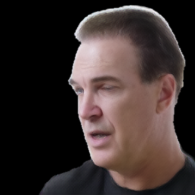
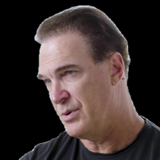
Input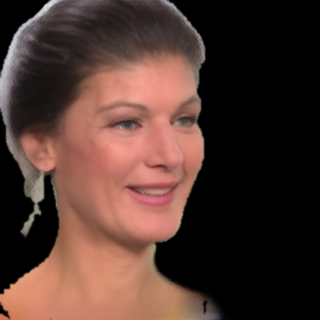
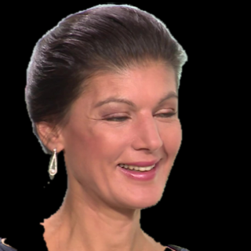
Input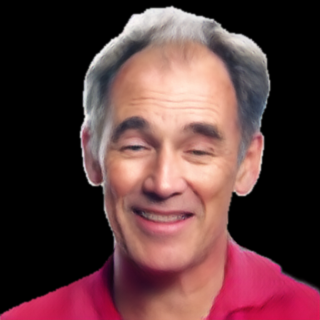
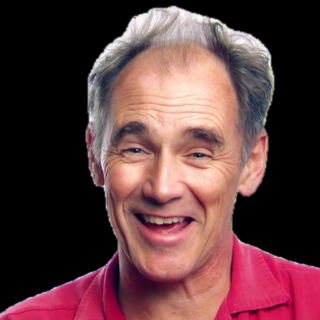
Input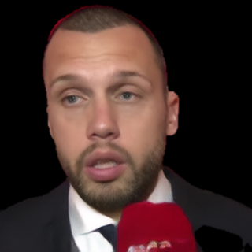
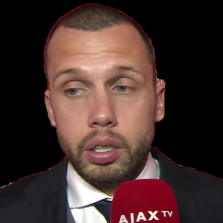
InputSingle-image self-reenactment on VFHQ. Insets show the source portraits; large images show our outputs at target frames.
ABSTRACT
Building an animatable 3D Gaussian head avatar from a single image requires stable three-dimensional structure, detailed appearance and motion compatible with a parametric face model. Under image-based supervision, jointly predicting Gaussian geometry and appearance can introduce ambiguity, particularly beyond the facial template, where reliable correspondences are needed for appearance recovery and animation.
We present OEAvatar, a two-stage framework that recovers deformable geometry before predicting appearance. Stage I learns layered canonical Gaussian positions beyond the facial template and establishes parametric motion correspondence. Stage II fixes these positions and combines geometric projection with depth-derived visibility to align and aggregate multi-scale image evidence in canonical space. An attribute decoder predicts the remaining Gaussian attributes on this fixed spatial reference. The canonical avatar is constructed once per source and reused across target frames through parametric deformation and Gaussian rendering. Experiments on VFHQ demonstrate effective single-image self-reenactment.
01 / RESULTS
One source. The same target frame.
Four selected examples from the manuscript.
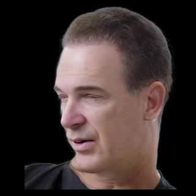
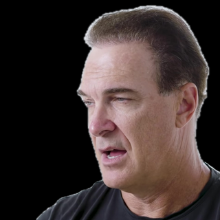
VFHQ 020027 · Source frame 0 · Target frame 65
These are four deliberately selected qualitative examples, not a random sample. In self-reenactment, the driving frame is also the ground truth. Outputs use the same source–target pairs. Our results are the archived Joint-LPIPS 190k refined outputs.
Display backgrounds follow the manuscript: parsing-based compositing for aligned images, connected-white removal for ROME/UIKA, and MODNet alpha with inverse native cropping for Portrait4D. These preparation differences can affect visible boundaries. Existing reviewed tiles are reused without retouching or detail repair. This gallery retains the four-baseline self-reenactment selection reviewed on September 11, 2026; subsequent experiments are not included here.
02 / METHOD
Source-adaptive off-surface geometry
meets depth-guided multi-scale features.
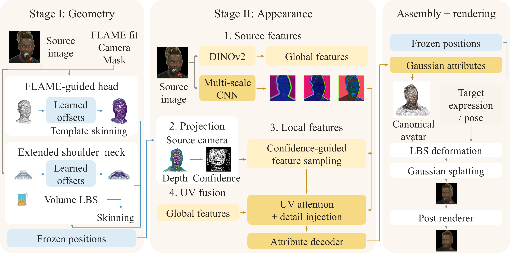
Source-dependent layered offsets extend a FLAME-guided head and a shoulder–neck carrier. Template and volumetric skinning provide their motion correspondence.
Fix the learned positions. Combine geometric projection, depth confidence and multi-scale image features to predict the remaining Gaussian attributes.
Apply target expression and pose, render the deformed Gaussians, then refine the image with the post renderer.
Method figure from the current manuscript. Blue and yellow trace geometry and appearance. Feature thumbnails use per-tensor PCA colors.
03 / EVALUATION
Archived full-model results.
Protocol and timing scope shown alongside.
| Metric | OEAvatar |
|---|---|
| PSNR ↑ | 20.86 |
| SSIM ↑ | 0.797 |
| LPIPS ↓ | 0.178 |
| CSIM ↑ | 0.736 |
| AED ↓ | 0.134 |
| APD ↓ | 0.015 |
| AKD ↓ | 4.903 |
50 videos × 50 target frames, using the FlexAvatar VFHQ crop protocol and SqueezeNet LPIPS.
One RTX 4090, batch size 1, 20 measured outputs after 3 warm-ups. Includes the model, Gaussian renderer and post renderer with preloaded tensors; excludes I/O and preprocessing. This is not end-to-end application latency.
Image-quality evaluation and timing use different sample sets. These values do not establish a matched cross-method ranking.
The results above demonstrate single-image self-reenactment. Cross-identity motion transfer, independent viewpoint sweeps and controlled ablation results are not presented in this draft. The visual examples should not be interpreted as evidence of complete 360° reconstruction.